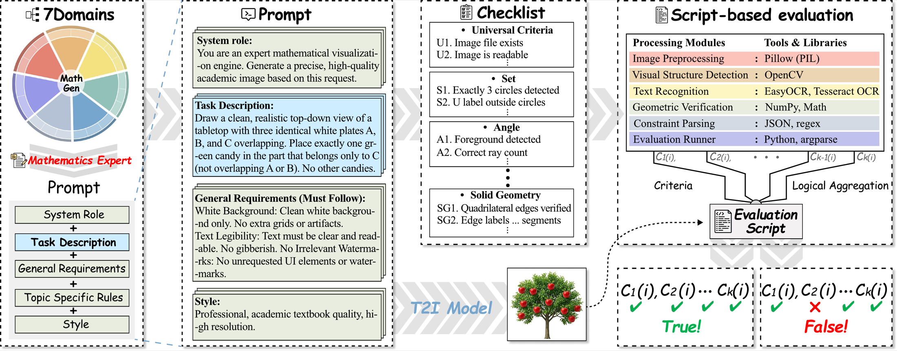
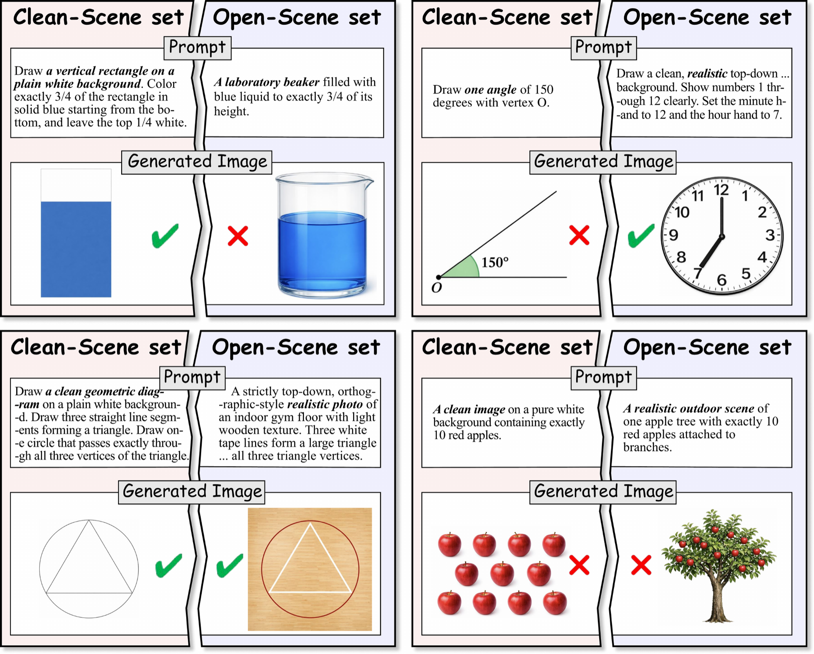
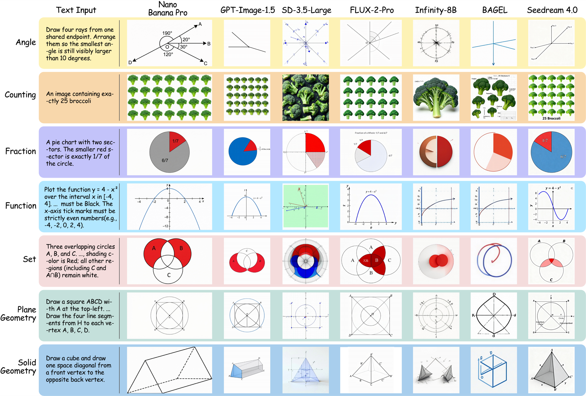
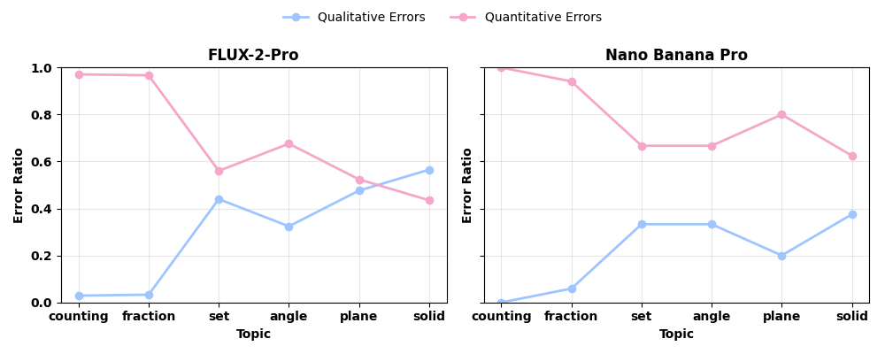

MathGen is a benchmark for evaluating mathematical correctness in text-to-image generation. It contains 900 problems across 7 core mathematical domains, supports both clean-scene and open-scene evaluation, and introduces a Script-as-a-Judge protocol that replaces subjective judging with deterministic executable verification.
While text-to-image (T2I) models have achieved remarkable photorealism, their ability to reason about strict mathematical constraints remains largely unproven. Existing benchmarks primarily focus on semantic alignment or aesthetic quality, often relying on VLM-based judges that struggle with precise logical verification.
To address this gap, MathGen introduces a rigorous benchmark evaluating mathematical generation capabilities across 900 problems spanning seven core domains. Unlike prior work, MathGen employs a Script-as-a-Judge protocol, where each prompt is paired with a dedicated executable verifier to ensure deterministic and objective pass/fail evaluation.
Experiments across representative open-source and proprietary T2I models reveal that mathematical fidelity is a major bottleneck: open-source models achieve only about 1-11% overall accuracy, with several structured domains often near zero, while the best closed-source models reach 42.0% overall but remain far from reliable across domains. Together, MathGen and its tool-based evaluation provide a principled testbed for measuring and improving mathematical correctness in T2I generation.
MathGen is built to measure whether text-to-image models generate mathematically correct images instead of merely plausible ones. The benchmark separates clean-scene tasks from open-scene tasks, enabling researchers to distinguish failures in core mathematical rendering from failures caused by richer visual composition.

Overview of the MathGen benchmark and evaluation pipeline. Each prompt is paired with a dedicated verifier so correctness is decided by explicit executable constraints.
Tests exact numerical correctness when generating target objects.
Requires precise instance-level control.Measures whether models can render proportional structure accurately.
Targets exact region and area relationships.Evaluates angular construction, ray layout, and geometric annotation.
Requires consistent directional geometry.Checks coordinate axes, curves, and function-specific structural correctness.
Especially difficult for current models.Measures 2D and 3D geometric structure under strict verification.
Includes intersections, projections, and composition.Extends evaluation to logical set structure and realistic scene conditions.
Tests robustness beyond clean diagrams.The benchmark uses a Script-as-a-Judge protocol. Each prompt is paired with a dedicated deterministic verifier implemented with classical vision and recognition tools. A generation is marked correct only when all task-specific constraints are satisfied.
This makes MathGen especially useful for studying whether a model can preserve exact structure under image synthesis. Instead of asking a multimodal judge whether an output looks right, the evaluation checks concrete geometric, numerical, and logical properties directly from the rendered image.
| Component | Role | Purpose |
|---|---|---|
| Prompt | Defines a mathematical requirement | Specifies the exact structure the model must render |
| Generator | Produces one image | Evaluated under default or standardized inference settings |
| Verifier Script | Checks constraints deterministically | Uses contour detection, OCR, geometry checks, or detection tools |
| Final Decision | Pass or fail | Marked correct only if all constraints are simultaneously satisfied |
Tasks are written so that a visually attractive image can still fail if it violates the mathematical requirement.
Different domains reveal different weaknesses: counting control, symbolic mapping, geometric consistency, and topology.
Open-scene prompts preserve the same mathematical condition while adding natural visual complexity.
Closed-source models are substantially stronger, but still not reliably mathematically correct.
Counting is easier than structural domains such as functions, geometry, and sets.
Open-scene evaluation often introduces further failures beyond what clean-scene tasks reveal.
MathGen shows a large gap between image realism and mathematical fidelity. Open-source systems often remain in the single-digit range overall, while even strong closed-source systems remain far from perfect across domains.
This gap is not uniform across tasks. Models may perform better on counting-like patterns while still failing function visualization, set logic, or geometry construction, which require stronger global structure preservation.
42.0%
Best clean-scene overall accuracy reported in the paper.
35.7%
Strong closed-source performance but still far from reliable.
1-11%
Many open-source models struggle across most mathematical domains.
This leaderboard keeps the paper-style ranking feel, but each row now links directly to the official model page. Readers can compare the clean-scene results and immediately jump to the corresponding model website, repository, or API documentation.

Open-scene evaluation shows how performance changes once the same mathematical requirement is embedded in a richer and more realistic environment.

Representative qualitative examples illustrate where models succeed, where they fail, and how mathematically incorrect outputs can still appear visually convincing at a glance.

Error analysis indicates that models often fail numerical consistency or symbolic structure even when the image appears superficially plausible.
Many real-world uses of image generation need more than style or realism. Educational diagrams, charts, geometry figures, UI mockups, and structured visual explanations all depend on exact relationships. MathGen provides a foundation for measuring this capability in a way that is objective, reproducible, and sensitive to mathematical correctness.
In that sense, MathGen is not only a benchmark but also a diagnostic tool. It helps distinguish whether a model is weak because it cannot count, cannot preserve exact geometry, cannot render symbolic structure, or simply breaks down once realistic scene composition is introduced.
Evaluation is based on executable rules, not subjective preference or weak proxy judges.
The full evaluation pipeline can be run consistently with the same deterministic logic.
The benchmark highlights where models fail: counts, ratios, geometry, symbolic structure, or realism shifts.
@article{liu2026mathgen,
title={MathGen: Revealing the Illusion of Mathematical Competence through Text-to-Image Generation},
author={Liu, Ruiyao and Shen, Hui and Zhang, Ping and Hsieh, Yunta and Zhang, Yifan and Xu, Jing and Chen, Sicheng and Li, Junchen and Lu, Jiawei and Ma, Jianing and others},
journal={arXiv preprint arXiv:2603.27959},
year={2026}
}